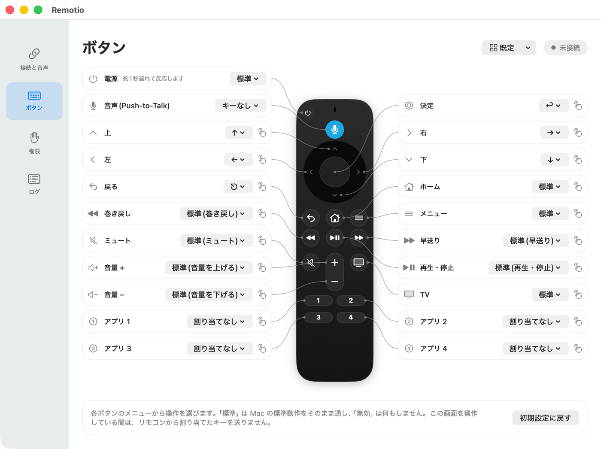

Fire TV のリモコンを、
Mac の音声入力コントローラーに
Remotio は、Alexa 音声認識リモコンを Mac の Push-to-Talk マイクと、自由に割り当てられるコントローラーにするアプリです。音声ボタンを押しながら話して音声入力し、ほかのボタンには好きな操作を割り当てられます。

できること
Push-to-Talk のマイク
音声ボタンを押しながら話すと、音声が仮想マイク「Remotio Microphone」に届きます。どのアプリでも入力として選べます。
音声入力と連携
音声入力アプリの Push-to-Talk のキーを音声ボタンに割り当てたり、押している間だけ macOS の音声入力を使ったりできます。
どのボタンにも好きな操作
キーやショートカット、メディアキー、システム操作を送れます。URL(Raycast の URL など)を開いたり、シェルコマンドを実行したりもできます。
長押しと2回押し
1つのボタンに、押す・長押し・2回押しの3つの操作を割り当てられます。
アプリごとの割り当て
特定のアプリが前面にあるときだけ使う割り当てを作れます。変えていない項目は既定の割り当てに従います。
複数のリモコン
複数のリモコンを同時に接続できます。割り当てはリモコンごとに保存されます。
対応リモコン
| リモコン | ボタン | マイク |
|---|---|---|
| Alexa 音声認識リモコン(Fire TV Stick 4K 付属) | 対応 | 対応 |
| Alexa 対応音声認識リモコン Pro | 対応 | 対応 |
Remote Pro の互換品(Amazon 以外の製品)では、マイクがうまく使えない場合があります。
ほかのリモコンで試した方は、Issues で動作を報告していただけると助かります。
はじめかた
- Releases から
Remotio.dmgをダウンロードし、Remotio を「アプリケーション」フォルダへ入れます。 - アプリを開きます。Apple の公証を受けていないので、最初はブロックされます。システム設定 › プライバシーとセキュリティ の「このまま開く」で許可します。
- セットアップの案内に沿って、権限の許可、Bluetooth でのリモコンのペアリング、仮想マイクのインストールを行います。
- 音声入力を使うアプリで入力に「Remotio Microphone」を選び、設定画面でボタンにキーを割り当てます。
詳しい使い方と既知の制限は README を参照してください。